Verkefnalýsing:
Verkefni tvö samanstendur af þremur minni verkefnum. Gera átti einskonar límmiða með vínylskera, skera út geirneglt módel af byggingareiningum sem hægt væri að raða saman og í hóp var framkvæmt kerf test.
Kerf-test
Kerf-testið var hluti verkefnis tvö sem gerður var í hóp, hópmeðlimir voru Júlía Sóley og Sigurbjörg Lovísa. Kerf-test er leið til þess að mæla hve mikið efni geislaskeri tekur af viðfangsefni. Ákveðið var að skera út 3mm þykka akrýl plötu. Með forritinu AutoCAD voru teiknaðir tíu ferningar sem hver var 1cm^2 hlið við hlið og voru þeir skornir út.
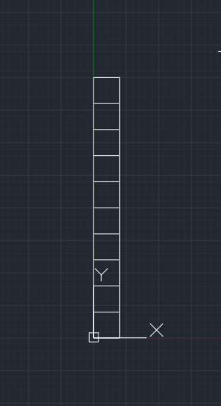
Formið var opnað með inkscape og sent í prentun. Eftir að formið hafði verið prentað út var holan sem skilin var eftir í plötu mæld og ferningum raðað saman og sú lengd mæld. Gatið var 100,9mm og kubbarnir 99,8mm við reiknuðum þar með út að kerfið væri 1.1/11 = 0.1mm .
Geislaskurður
Hugmyndavinnan:
Það er ekki oft í verkfræðinni sem nemendur fá tækifæri til að vera skapandi, ég vildi nýta það tækifæri vel og byrjaði snemma að pæla í því hvað mig langaði að skera út. Það fyrsta sem ég gerði var að sjálfsögðu að leita á veraldsvefnum eftir "Cool laser cutting projects" en eftir að skrolla í gegnum það í smá tíma án þess að finna neitt sem mér þótti sérlega "Cool" mundi ég eftir ljósakrónu sem Íris Benedikstsdóttir gerði í fyrra (Sjá síðu hér). Mér fannst þetta frábær hugmynd og ákvað að hanna mína egin ljósakrónu.
Hönnun og framkvæmd:
Mér finnst mjög töff það sé hægt að beygja við með því að skera rétt í hann og fann skemmtilegan bækling um mismunandi skurði (Sjá síðu hér). Ég endaði þó á því að teikna upp einfalda gerð af gleiðboganeti (e. lattice). Næst byrjaði ég að hanna.
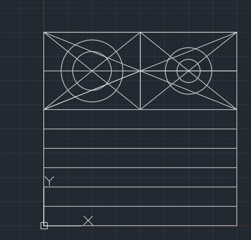 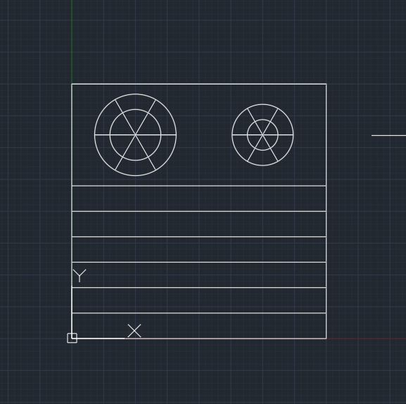 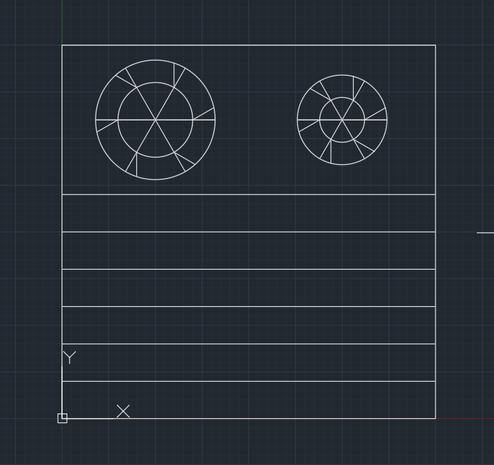 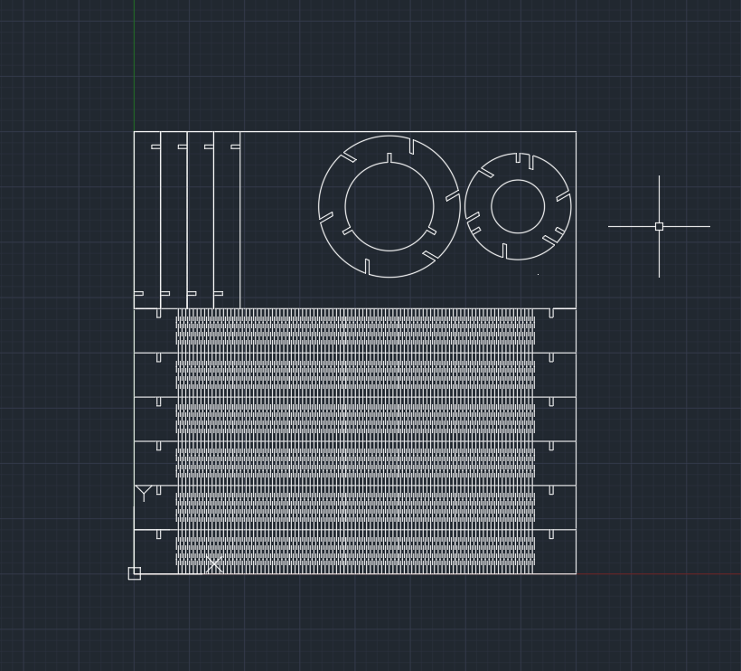 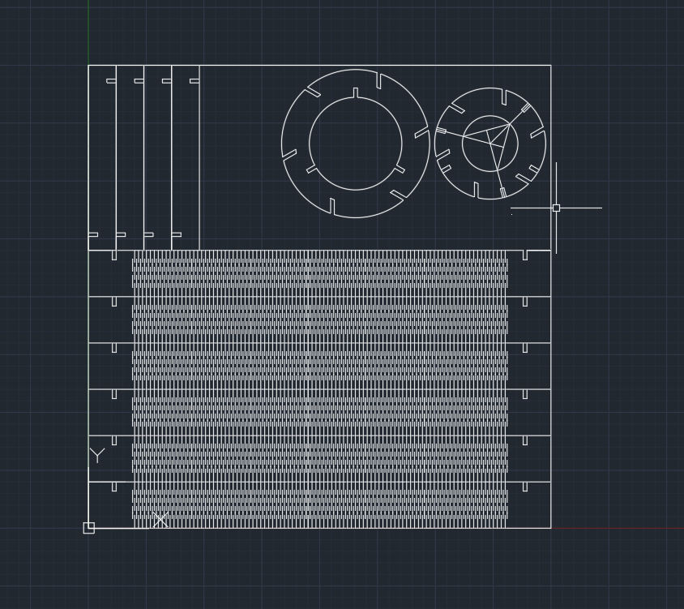 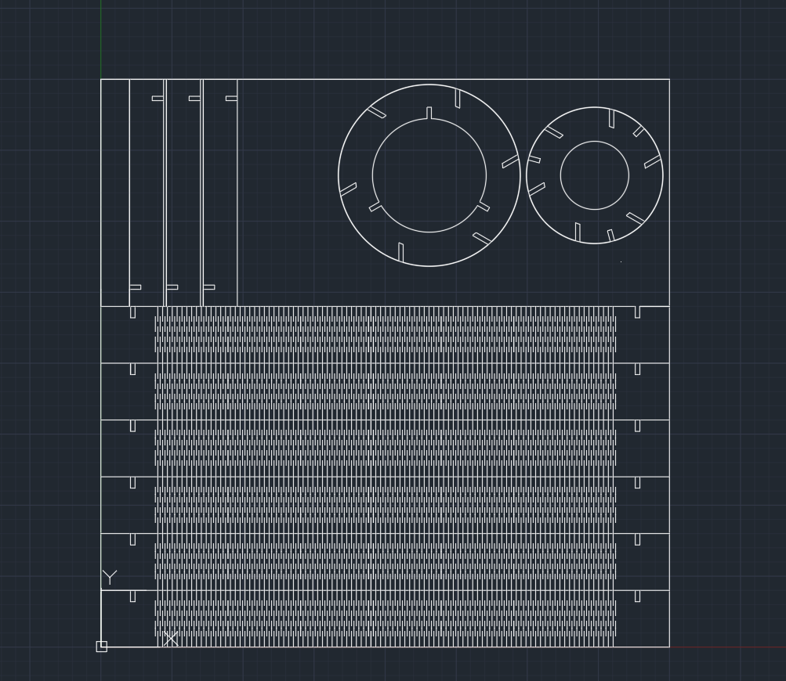
Þegar ég mætti upp í FabLab með þetta verkefni hafði ég enga hugmynd um hvað kerfið væri hjá viðnum þar sem ég hafði skorið út akrýl. Ég ákvað að gera nokkrar tilraunir og teiknaði upp plötu með mis-stórum götum til að athuga hvaða bil myndi henta best fyrir kross-samskeyti.
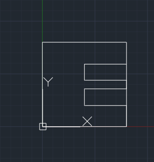
Þegar bilið var 3.7mm smell pössuðu skeytin saman. Ég breytti öllum krosssamskeytabilum í rétta stærð og byrjaði á því að prenta út einn hring, eina stoð og eina beygju.
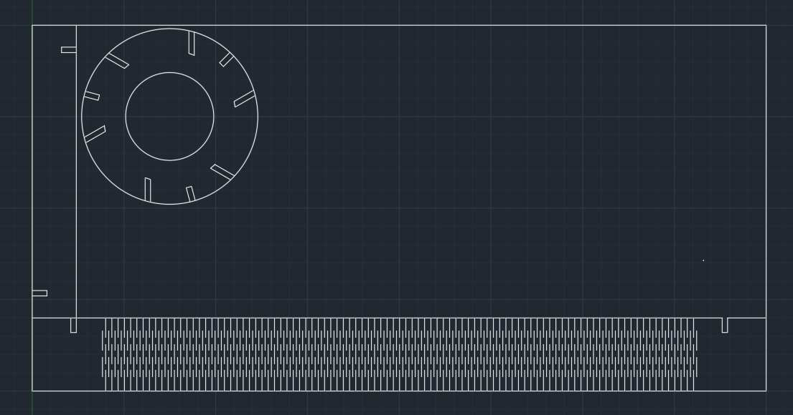
Ég teiknaði allt í AutoCAD því ég nota AutoCAD mikið í vinnunni og er með mikla reynslu í forritinu. Þegar kom að því að prenta hlóð ég skjalinu niður sem DXF skjal og setti á USB kubb. Í tölvunni sem er tengd við geislaskerann opnaði ég skjalið með Inkscape og setti að breidd lína sé 0.02mm og ýtti á "print". Þegar í prent flipann var komið voru stillingar stilltar, Hraði 10%, kraftur 100%, og tíðni 10%. einnig var þykktin sett sem 4mm. Þá var byrjað að skera.
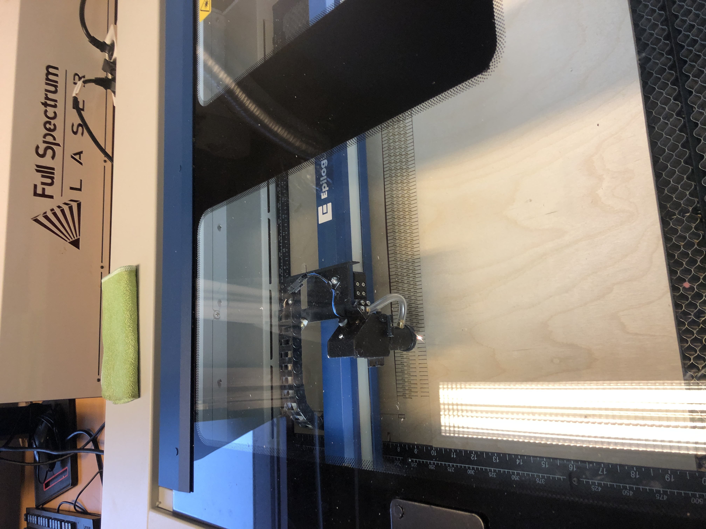
Allir íhlutir heppnuðust vel og smellpössuðu saman, mér fannst þó stefna í að ljósakrónan yrði aðeins of ýkt neð 6 beygjum í kring um sig svo ég ákvað að breyta smá til og hafa þrjár beygjur frekar en 6 og svo ákvað ég að lengja stoðirnar aðeins. Hér eru myndir af loka teikningum.

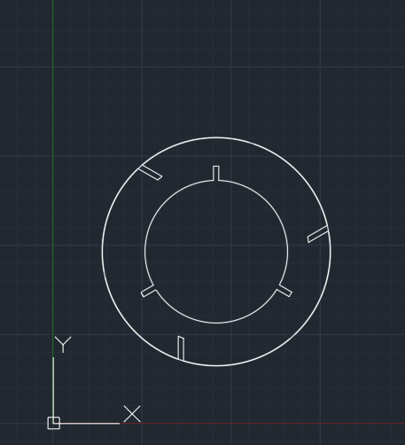
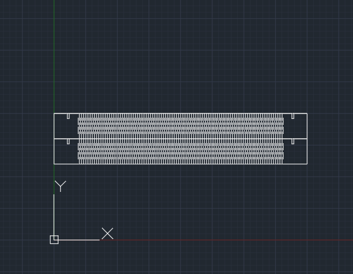
Ég skar aftur út minni hringinn og nýar stoðir auk þess að skera út restina af beygjunum og stóra hringinn.
Útkoma:
Ljósakrónan kom mjög vel út og samskeytin smellpössuðu.
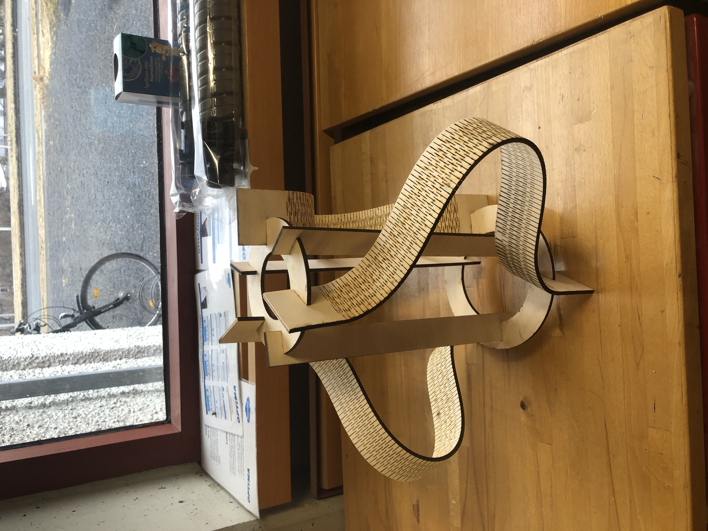
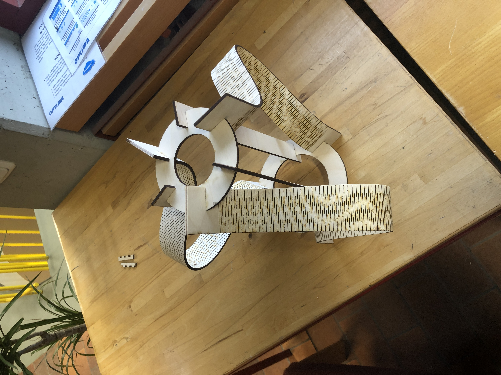
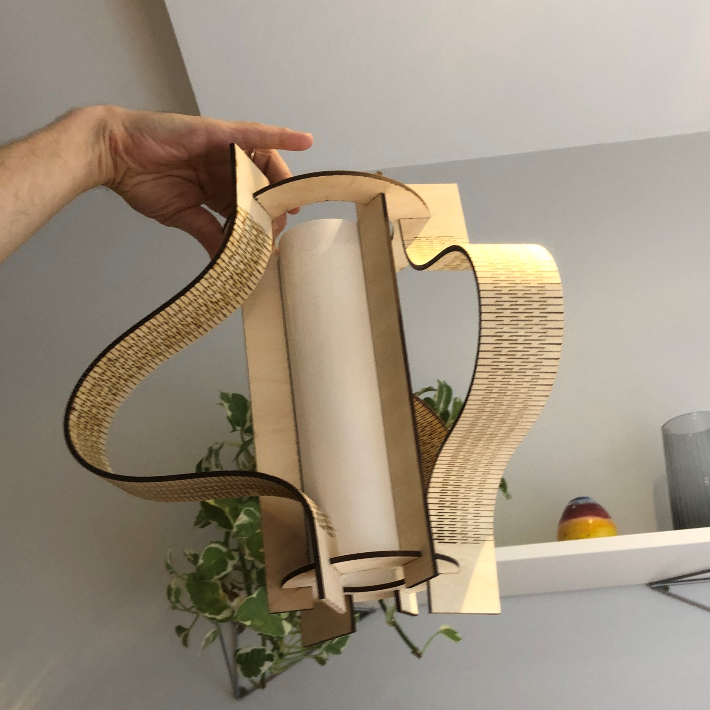
Vínylskurður
Það fyrsta sem ég gerði þegar ég var að byrja á þessu verkefni var að leita á veraldsvefnum eftir innblástri. Það hefði ekki átt að koma á óvart en flestar hugmyndir sem komu upp þegar leitað var með strengnum "Vinyl projects" voru hlægilega lélegar. Sem sýnishorn set ég með mynd sem ég tók af síðunni artsyfartsymama.com.
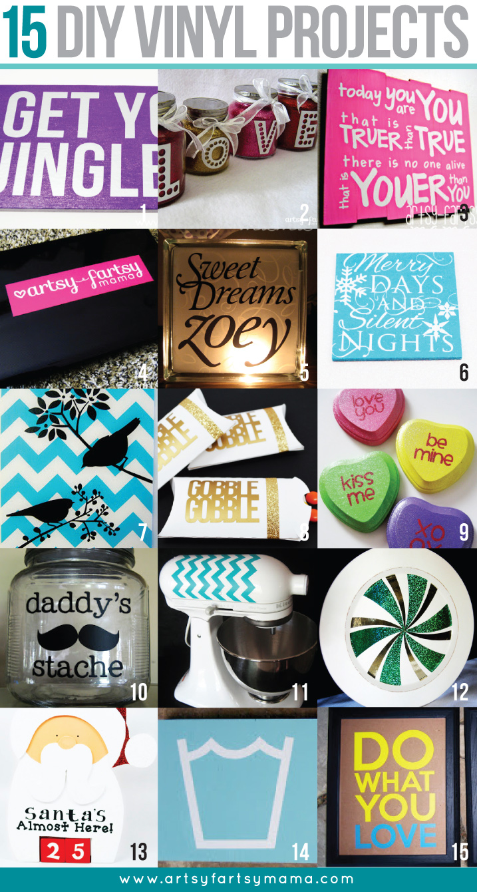
Ég var fljót að loka þeim glugga og ákvað að geyma verkefnið í einhvern tíma meðan ég kom klisjukenndum frösum og yfirvaraskeggjum úr heilanum á mér. Nokkrum vikum síðar var ég á leið í tíma í vélarstofunni, heimastofu 3.árs nema í véla- iðnaðar- og efnaverkfræði og tók eftir að skiltið sem hafði verið fyrir utan stofuna með merki félagsins var farið. Þá átti sér stað hugljómun og ákveðið var að nýta þetta verkefni í að gera nýtt merki til að líma á hurðina. Ég teiknaði merki Vélarinnar upp í AutoCAD.
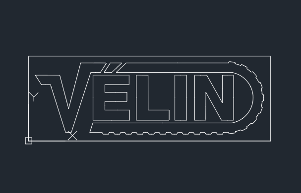
Næst færði ég teikninguna yfir í Inkscape breitti línubreidd í 0,02mm og setti á USB kubb. Mér fannst þurfa að yassify-a logo-ið aðeins svo ákveðið var að skera það út á bleikan vínyl og svo var merkið skorið út og límt á hurð Vélarstofunnar.
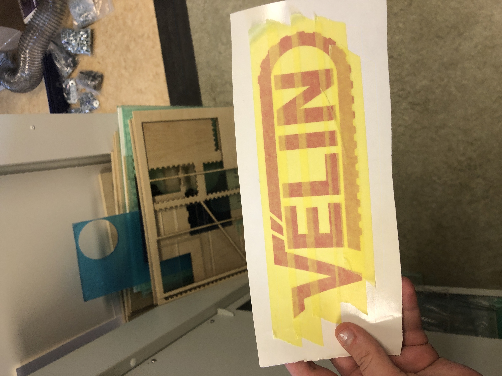
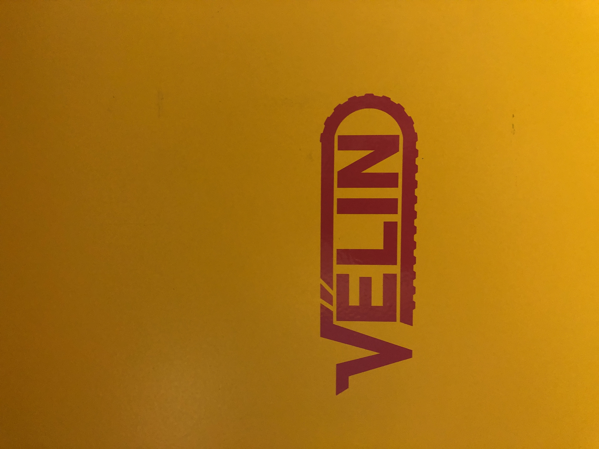
Límmiðinn/vínyllinn kom út alveg eins og ég hafði vonað og skreytir nú heimastofu vélarinnar.
Tímaskýrsla
Það fóru u.þ.b 32 klukkutímar í þetta verkefni. Geislaskurðurinn tók um 25 klst, vínylskurðurinn þrjár klst og að uppfæra síðuna tók um 5 klst